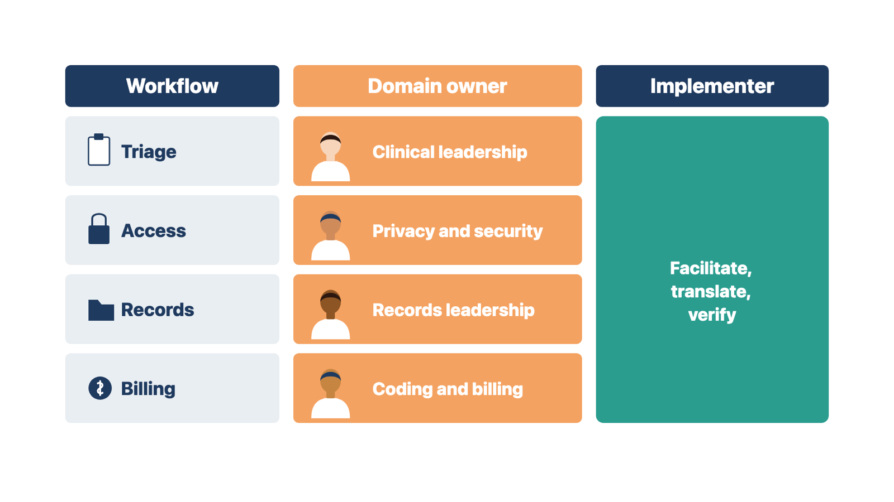
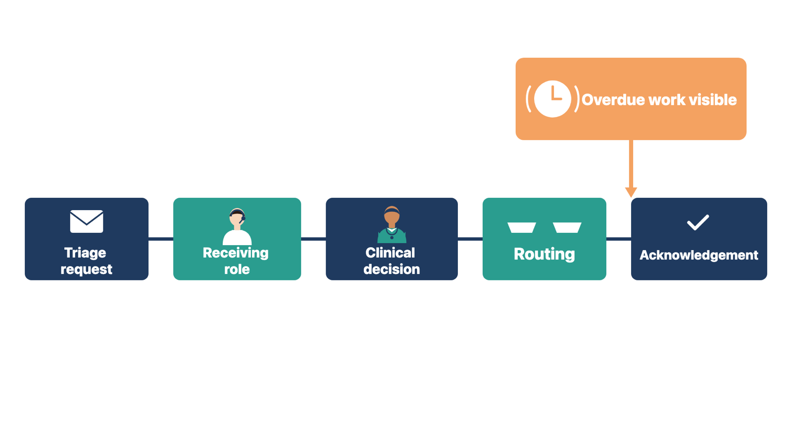
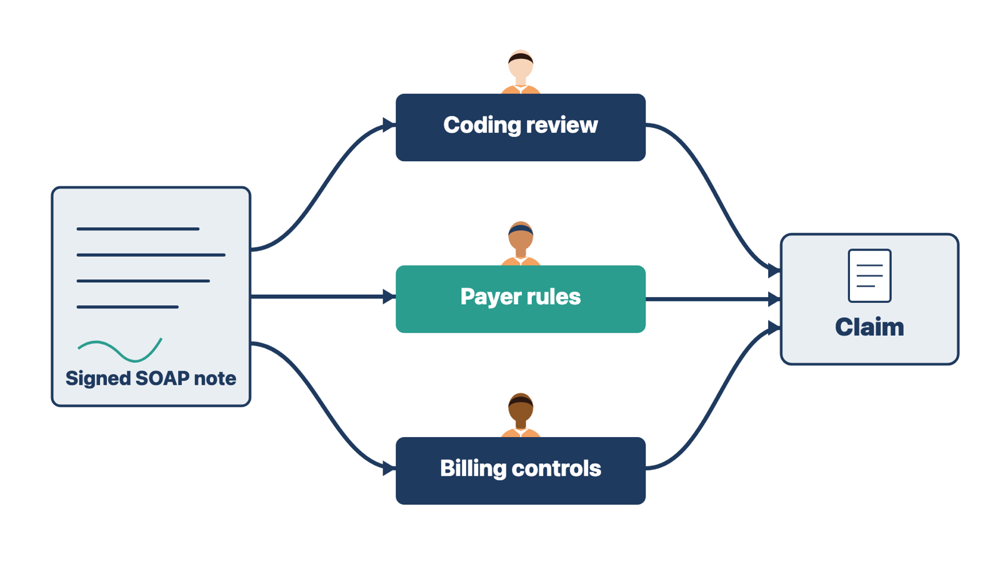
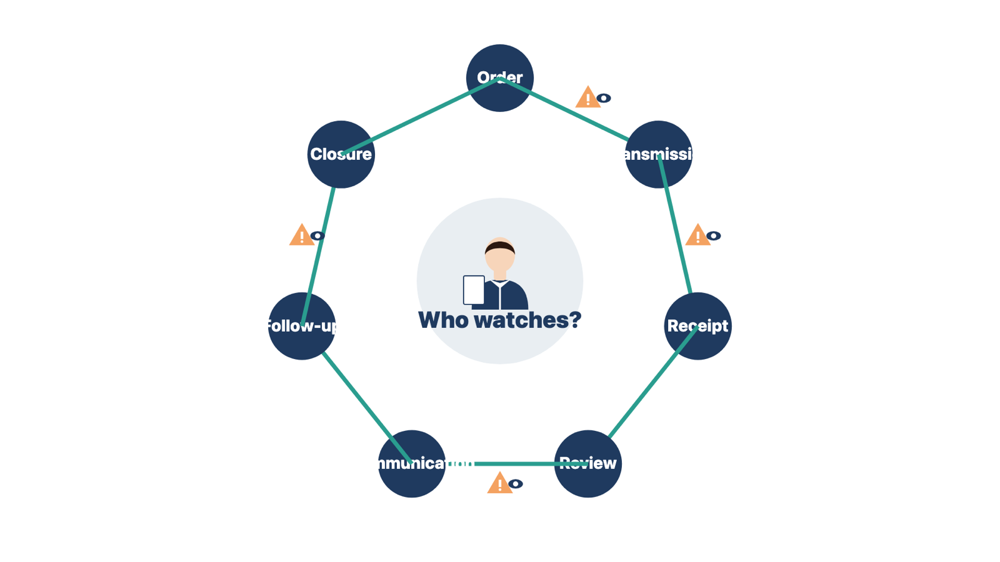

Specialized work carries clinical, legal, and financial risk. If you make those calls yourself, you put patients and the clinic at risk, and you act outside your role.
A domain authority is the client leader who owns a specialized area of work and approves how it is done. Before specialized training begins, name the domain authority for every workflow. Examples:

You do not set clinical thresholds. You do not interpret the law, pick billing codes, or approve record-keeping rules. You do not decide whether protected information may go into a tool.
Rule: Name the domain authority for every specialized workflow before training begins.
Example A. Nurses ask which symptoms need a same-day visit. The medical director owns that rule. You show how the system routes the call once she decides. Example B. The billing team asks which code fits a new visit type. The coding lead decides. You build the approved code list. In both cases, the owner decides, and you build and teach what was decided.
Check yourself
A class on an unapproved workflow teaches staff the wrong thing. They then have to unlearn it before go-live.
Do not start specialized training just because it is next on the calendar. Confirm:
If a high-impact workflow is still undecided, use the class time for a decision session. Do not present a draft as final training.
The timing rule from Module 5 also applies here. Early sessions with key users can test the design. Final specialized training happens close to go-live, on the tested release that will go live.
Rule: If a high-impact workflow is undecided, hold a decision session instead of a class.
Example A. The after-hours escalation rule is still open. You use that block for a decision session with the medical director and train the approved parts. Example B. The orders template passed QC and the clinical lead approved the scenarios. You run the full class. The difference is whether the owner has decided.
Check yourself
Triage errors can delay urgent care. The system must route urgent work to the right person, and someone must notice when it stalls.
Triage is the clinical process of deciding how urgent a patient's need is. The system can collect answers, show approved questions, apply approved rules, route work, alert staff, and record decisions. Clinical leaders decide the protocol, which is the written triage rule set. They also decide who may perform triage, what needs immediate escalation, and what happens during downtime.
Training should cover:

Practice scenarios should include a routine request, missing information, a case that triggers the escalation rule, a misrouted item, a late acknowledgment, and downtime. Use fictional data.
Rule: Teach how the system routes triage; clinical leaders own the triage judgment.
Example A. A nurse asks how to handle a symptom the protocol does not cover. You raise the gap with the nurse lead. Example B. A medical assistant asks why an urgent item turned red. You show the approved overdue rule and who must act. In the first case you route a clinical gap; in the second you teach the approved system behavior.
Check yourself
Staff who think a signed note is a finished claim may skip coding review. That can lead to wrong bills and payer problems.
Many clinics use the SOAP structure for notes: Subjective, Objective, Assessment, and Plan. Others use different or specialty formats. The system may offer templates, carry forward earlier information, suggest content, link orders, or support coding. None of these changes one fact: the clinician is responsible for an accurate, complete record.
Training should cover:
Do not teach that a signed SOAP note automatically creates a clean, billable claim. Notes, coding, coverage, medical need, payer rules, and billing controls are related but separate steps. Qualified clinical and billing leaders approve each one.

Example A. A physician signs a note and asks, "Is that the claim done?" You show the approved coder's queue. Example B. A nurse practitioner wants a template that adds codes on its own. You log the request for the coding lead. Both cases keep coding with its owner.
Check yourself
Providers first meet converted data during training. If they do not know how to check it, wrong or missing allergies can reach a real visit.
If the clinic is moving from another system, providers will see converted medications, allergies, and problems. Include a scenario where a learner reviews a converted list at a first visit. Show what uncoded or free-text entries look like. Then show the approved reconciliation step, where a clinician checks the converted list against the patient and confirms each entry.
Clinical leaders decide the reconciliation rule, such as who confirms each list and when. Module 8 covers the clinical check of converted data.
Rule: Teach the approved reconciliation step; do not fix converted clinical data yourself.
Example A. A provider finds "PCN? rash as kid" as free text and asks you to recode it. You walk her through the approved first-visit check. Example B. A nurse sees a converted medication with no dose. You show where to confirm it with the patient. In both cases, the clinician confirms the entry through the approved step.
Check yourself
A result that no one reviews can harm a patient. Every order needs a named person watching each place it can fail.
If the project includes orders and results, train the whole loop:
order → transmission → receipt → review → communication → follow-up → closure

The 2025 SAFER Guides (Safety Assurance Factors for EHR Resilience) from the Office of the National Coordinator for Health IT are national safety checklists. They cover areas such as order entry, test results and follow-up, patient identification, clinician communication, system management, and contingency planning. The client sets its own process with its clinical leaders.
Rule: Name a watcher and a review interval for every place an order or result can fail.
Example A. Unmatched lab results have no watcher. The clinical lead must assign one before the orders module passes. Example B. Unreviewed results go to the ordering provider, with the nurse lead as backup. That row is complete.
Check yourself